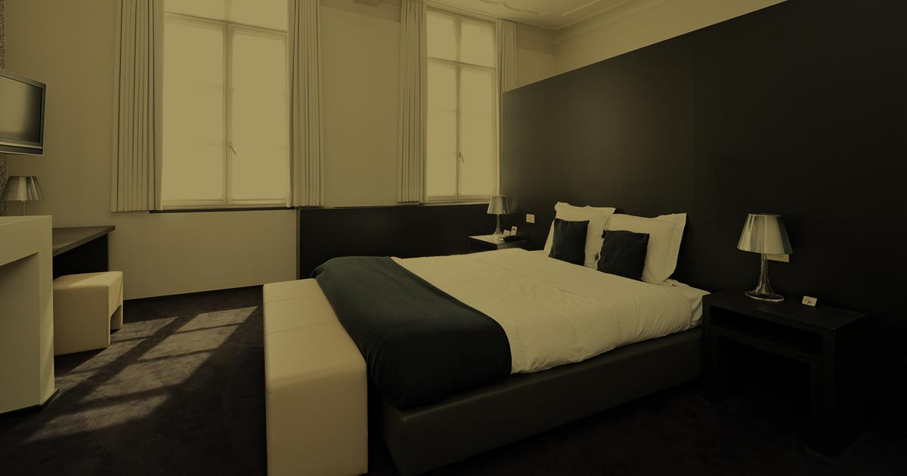

Kortrijk · Groeningestraat 17
Hotel Messeyne
Twenty-eight rooms inside a classified monument. The signature is a spiral stone staircase and bare-beam guestrooms; downstairs an art-deco bar geared, with a straight face, to "cigar and whisky aficionados."[9]
Five minutes' walk from the Grote Markt[8]. Full operation — gym, hammam, gourmet restaurant on site — if that matters.
28 rooms
Spiral staircase
Hammam
Art-deco bar